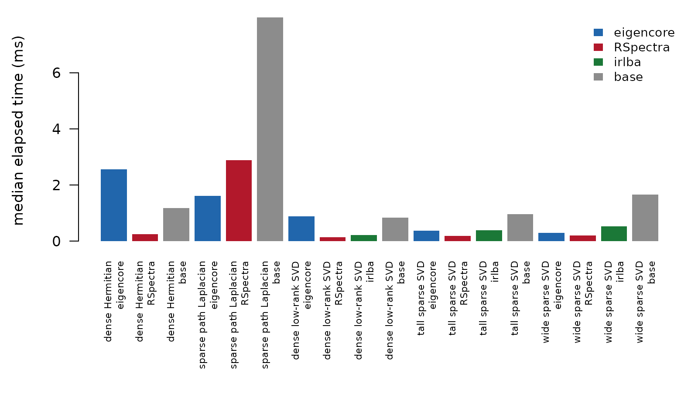

Benchmarking eigencore against established solvers
benchmarks.RmdBenchmarks are trust work. They tell you whether a solver is fast enough, whether it returns the same numerical slice as established tools, and whether the returned vectors actually satisfy the equations they claim to solve.
This vignette runs a compact comparison suite against
RSpectra, base R, and irlba. It uses small
problems so the article can be rebuilt on a laptop. Treat the tables as
a reproducible smoke comparison, not as a release-speed claim. For
promotion-grade evidence, use the installed-package benchmark gates at
the end of the vignette.
library(eigencore)What should be compared?
A useful benchmark suite needs more than one matrix. Dense and sparse inputs exercise different planner decisions, and SVD has different baselines than Hermitian eigenproblems. The smoke suite below covers five regimes:
benchmark_regimes <- data.frame(
regime = c(
"dense Hermitian",
"sparse path Laplacian",
"dense low-rank SVD",
"tall sparse SVD",
"wide sparse SVD"
),
input = c("120 x 120 dense", "300 x 300 dgCMatrix", "180 x 70 dense",
"320 x 60 dgCMatrix", "60 x 320 dgCMatrix"),
compared_methods = c("eigencore, RSpectra, base",
"eigencore, RSpectra, base",
"eigencore, RSpectra, irlba, base",
"eigencore, RSpectra, irlba, base",
"eigencore, RSpectra, irlba, base")
)
knitr::kable(benchmark_regimes)| regime | input | compared_methods |
|---|---|---|
| dense Hermitian | 120 x 120 dense | eigencore, RSpectra, base |
| sparse path Laplacian | 300 x 300 dgCMatrix | eigencore, RSpectra, base |
| dense low-rank SVD | 180 x 70 dense | eigencore, RSpectra, irlba, base |
| tall sparse SVD | 320 x 60 dgCMatrix | eigencore, RSpectra, irlba, base |
| wide sparse SVD | 60 x 320 dgCMatrix | eigencore, RSpectra, irlba, base |
Base R is included as a truth-oriented reference. For sparse matrices
it intentionally densifies via as.matrix(), so it is useful
at small sizes but not a fair large-sparse production baseline.
irlba is included for SVD rows, where it is a standard
partial-SVD comparator.
How are the rows judged?
Each row records four things:
- median elapsed time from
bench::mark(); - allocated memory reported by
bench; - relative error against a dense base truth for the requested values;
- an explicit residual/backward-error check on the returned vectors.
For eigencore rows, the table also reports the planner label that ran. That label matters: a native row, a dense fallback, and a reference boundary are different claims even if their values agree.
Run the smoke comparison
| regime | task | method | median_ms | mem_mb | rel_error | backward_error | residual_check | eigencore_label | status |
|---|---|---|---|---|---|---|---|---|---|
| dense Hermitian | eigen | eigencore | 2.5560 | 1.06700 | 0 | 0 | TRUE | native dense Hermitian LAPACK fallback | ok |
| dense Hermitian | eigen | RSpectra | 0.2451 | 0.06661 | 0 | 0 | TRUE | NA | ok |
| dense Hermitian | eigen | base | 1.1750 | 0.42400 | 0 | 0 | TRUE | NA | ok |
| sparse path Laplacian | eigen | eigencore | 1.6070 | 1.83600 | 0 | 0 | TRUE | native tridiagonal Hermitian shift-invert (factorized Lanczos) | ok |
| sparse path Laplacian | eigen | RSpectra | 2.8880 | 0.01991 | 0 | 0 | TRUE | NA | ok |
| sparse path Laplacian | eigen | base | 7.9760 | 3.18800 | 0 | 0 | TRUE | NA | ok |
| dense low-rank SVD | SVD | eigencore | 0.8857 | 1.30600 | 0 | 0 | TRUE | native certified Gram SVD special case | ok |
| dense low-rank SVD | SVD | RSpectra | 0.1409 | 0.09405 | 0 | 0 | TRUE | NA | ok |
| dense low-rank SVD | SVD | irlba | 0.2165 | 0.56060 | 0 | 0 | TRUE | NA | ok |
| dense low-rank SVD | SVD | base | 0.8412 | 0.59420 | 0 | 0 | TRUE | NA | ok |
| tall sparse SVD | SVD | eigencore | 0.3690 | 0.01904 | 0 | 0 | TRUE | native certified Gram SVD special case | ok |
| tall sparse SVD | SVD | RSpectra | 0.1861 | 0.02502 | 0 | 0 | TRUE | NA | ok |
| tall sparse SVD | SVD | irlba | 0.3931 | 0.17600 | 0 | 0 | TRUE | NA | ok |
| tall sparse SVD | SVD | base | 0.9639 | 0.89790 | 0 | 0 | TRUE | NA | ok |
| wide sparse SVD | SVD | eigencore | 0.2852 | 0.02358 | 0 | 0 | TRUE | native certified Gram SVD special case | ok |
| wide sparse SVD | SVD | RSpectra | 0.2073 | 0.02246 | 0 | 0 | TRUE | NA | ok |
| wide sparse SVD | SVD | irlba | 0.5289 | 0.15420 | 0 | 0 | TRUE | NA | ok |
| wide sparse SVD | SVD | base | 1.6570 | 0.90980 | 0 | 0 | TRUE | NA | ok |

Elapsed-time smoke comparison by regime and method. These small rows are useful for detecting obvious regressions and method-selection surprises, but they are not release-grade speed evidence.
Read the table from right to left. First, status should
be "ok" and residual_check should be
TRUE; otherwise the elapsed time is not a useful
time-to-answer measurement. Next, rel_error should be near
machine precision or solver tolerance. Only then does
median_ms become meaningful.
For eigencore, inspect eigencore_label before
interpreting speed. A native sparse path and a dense LAPACK fallback
both may be correct, but they support different scaling claims.
What this smoke vignette does not prove
The rows above are deliberately small. They keep the vignette runnable, and they catch obvious problems: wrong target, broken sparse handling, missing vectors, certification drift, and large timing regressions. They do not prove large-scale speed claims.
For larger sparse matrices, base R is a truth oracle only while
as.matrix(A) is affordable. The production question is
whether eigencore beats certified partial solvers without silently
densifying. That requires installed-package runs, larger fixtures, saved
artifacts, and memory evidence.
Run promotion-grade benchmarks
Use the inst/benchmarks scripts when you need evidence
suitable for a release note, paper, or solver-promotion decision. Run
them from an installed package, not from a mutable source tree:
R CMD INSTALL --library=/tmp/eigencore-bench-lib .
R_LIBS=/tmp/eigencore-bench-lib \
Rscript inst/benchmarks/bench-native-hermitian-gate.R \
--strict --save --cases=path_laplacian:1000For the SVD surface, compare eigencore against RSpectra,
irlba, and base rows where those baselines are
meaningful:
R_LIBS=/tmp/eigencore-bench-lib \
Rscript inst/benchmarks/bench-svd-surface.R \
--iterations=1 --h-candidate \
--methods=eigencore,RSpectra,irlba,base \
--cases=tall_sparse,wide_sparse \
--subject=eigencore --strict --saveThose scripts add the release-grade pieces this vignette
intentionally keeps small: strict pass/fail gates, larger sparse
fixtures, saved RDS artifacts, memory ratios, and planner-provenance
checks. Use docs/v1-benchmark-manifest.md for the current
release-gate inventory and docs/post-v1-benchmark-gates.md
for future-promotion gates.